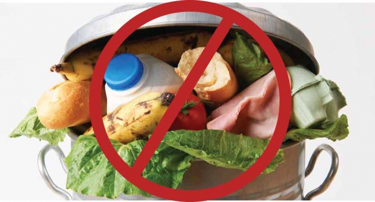

Heerlijk eten
Er zijn van allerlei restantjes overgebleven van voorgaande maaltijden en je hebt geen idee wat je ervan moet
maken. Geen probleem, geef aan welke restantjes je nog hebt en wij zorgen dat jij overheerlijke recepten
krijgt waar deze ingredienten nodig zijn!
Gezelligheid
We kennen allemaal wel de momentjes dat je bij een overheerlijke maaltijd (VoedieMeal) ongemakkelijke stiltes
vallen. Vrees niet, vraag ons om foodfacts en breng het gesprek weer op gang! Je mag ons trouwns ook altijd
om een willekeurig grapje vragen ;).

Geen voedselverspilling
Om de klimaatcrisis aan te pakken moet er veelal
gedragsverandering plaatsvinden bij de mensen zelf. Wist je dat het produceren van voedsel enorm
milieubelastend kan zijn? Weggooien is daarom extra zonde.
Meer weten over de milieubelasting van het produceren van voedsel? Klik dan Hier.